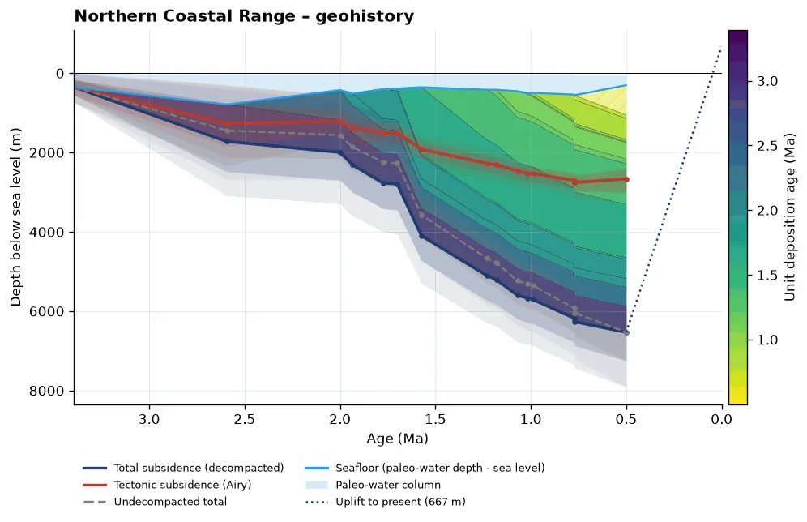
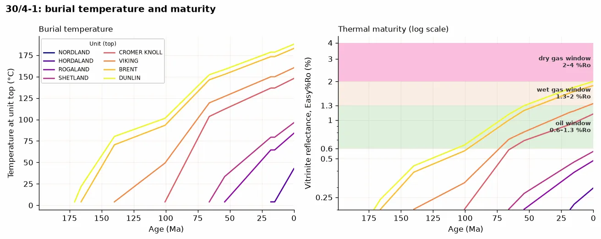
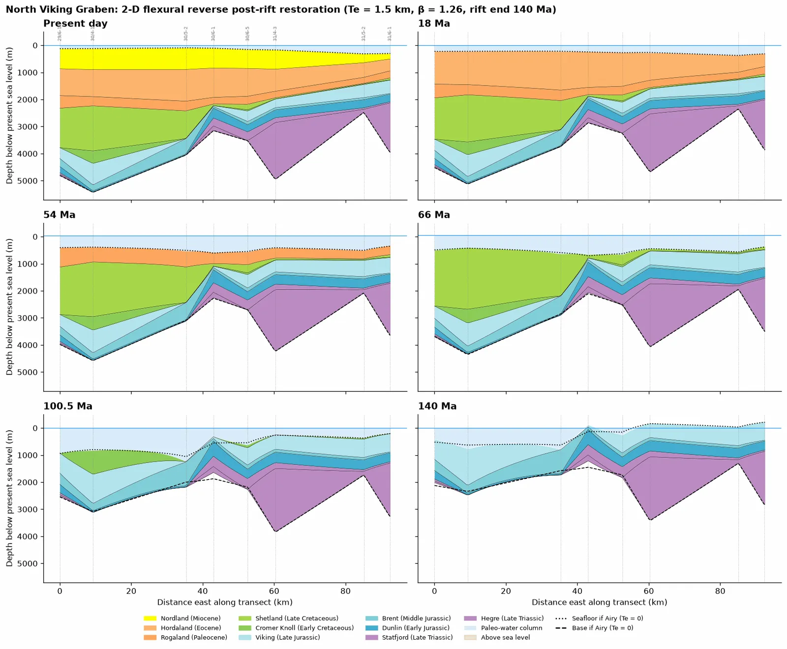

Python · R · Basin subsidence
 pyBasinSubs
pyBasinSubs
pyBasinSubs reconstructs how a sedimentary basin sank and filled through time by backstripping its layers. It's a new Python package that extends my original R code, BasinSubs (Lai et al., 2021, Sedimentary Geology; Lai et al., 2022, Communications Earth & Environment), which stays available as its own repo.
- Version0.1.0
- R codeBasinSubs, BSD-3-Clause
- LicenseAGPL-3.0 or later
Overview
pyBasinSubs reconstructs how a sedimentary basin sank and filled through time by backstripping its layers. It's the Python version, and an extension, of my original R code, BasinSubs.
pyBasinSubs brings that backstripping workflow into Python and goes further: Monte Carlo uncertainty, thermal history and maturity, 2-D flexural backstripping and section restoration, CSV templates and apps for your own data. The legacy module reproduces the BasinSubs R results, and legacy.py and the bundled BasinSubs data keep their BSD-3-Clause notice.

Examples
Example notebooks cover each feature, from Taiwan to the North Sea.



Key features
Backstripping
1-D backstripping with Monte Carlo uncertainty (reproduces the BasinSubs R results).
Porosity and water depth
Porosity–depth fits and paleo-water depth from foraminifera.
Thermal history
Thermal history and source-rock maturity.
Sections and your data
2-D flexural backstripping and section restoration, plus desktop and Streamlit apps.
The original R code
BasinSubs is the original set of R scripts from Larry Syu-Heng Lai’s University of Oregon research on the Coastal Range of eastern Taiwan. It is tied to that research: the data and results were made with collaborators for the 2022 Communications Earth & Environment paper and the 2021 Sedimentary Geology paper. It stays archived as published, on Zenodo, under the BSD-3-Clause license.
- Porosity and age models. A global average porosity–depth curve, and linear age–thickness models that place paleo-water depth and relative sea level at each dated unit boundary.
- Subsidence analysis. Decompaction and backstripping of the northern and southern sections, with errors carried through, and geohistory plots.
- Data and results. Unit thickness, paleo-water depth, sea level, porosity–depth data, and the long-term uplift and subsidence rates of the arc crust.
pyBasinSubs is a separate, general Python package. Its legacy mode reproduces the BasinSubs R results, and that part keeps the BSD-3-Clause notice.
Installation
pip install pybasinsubsThe apps and notebooks are optional add-ons; the README lists them.
Citation
Lai, L.S.-H. (2026) pyBasinSubs. Zenodo, https://doi.org/10.5281/zenodo.23832018
Please also cite the method paper:
Lai, L.S.-H., Dorsey, R.J., Horng, C.-S., Chi, W.-R., Shea, K.-S., and Yen, J.-Y. (2022) Extremely rapid up-and-down motions of island arc crust during arc-continent collision. Communications Earth & Environment, 3, 100. https://doi.org/10.1038/s43247-022-00429-2
For the original R code: BasinSubs, Zenodo, https://doi.org/10.5281/zenodo.5823612. Data: figshare, https://doi.org/10.6084/m9.figshare.19350530.
pyBasinSubs is under the GNU Affero General Public License 3.0 or later.